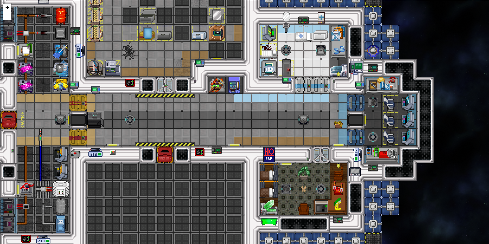

Current Projects
Check out my cool game blocktest here. It's a 2D sandbox exploration game with mechanics and gameplay similar to games like Terraria and Starbound. It's currently playable but very basic. It runs in the unity engine, and is entirely open-source!
Also my other cool ss13 project shiptest which is based around ships that can land and fly around and stuff. it's a bit early in development but it's fun (also the website is cool)
